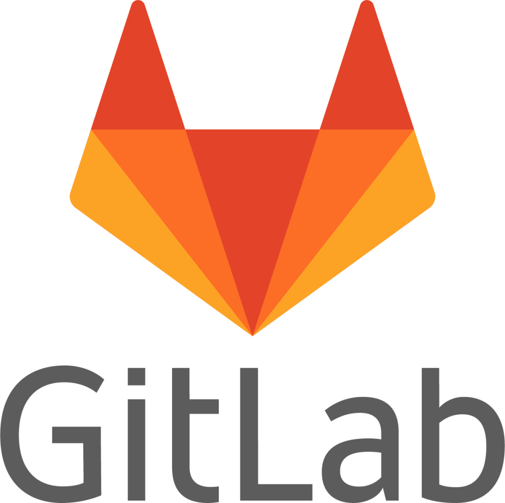
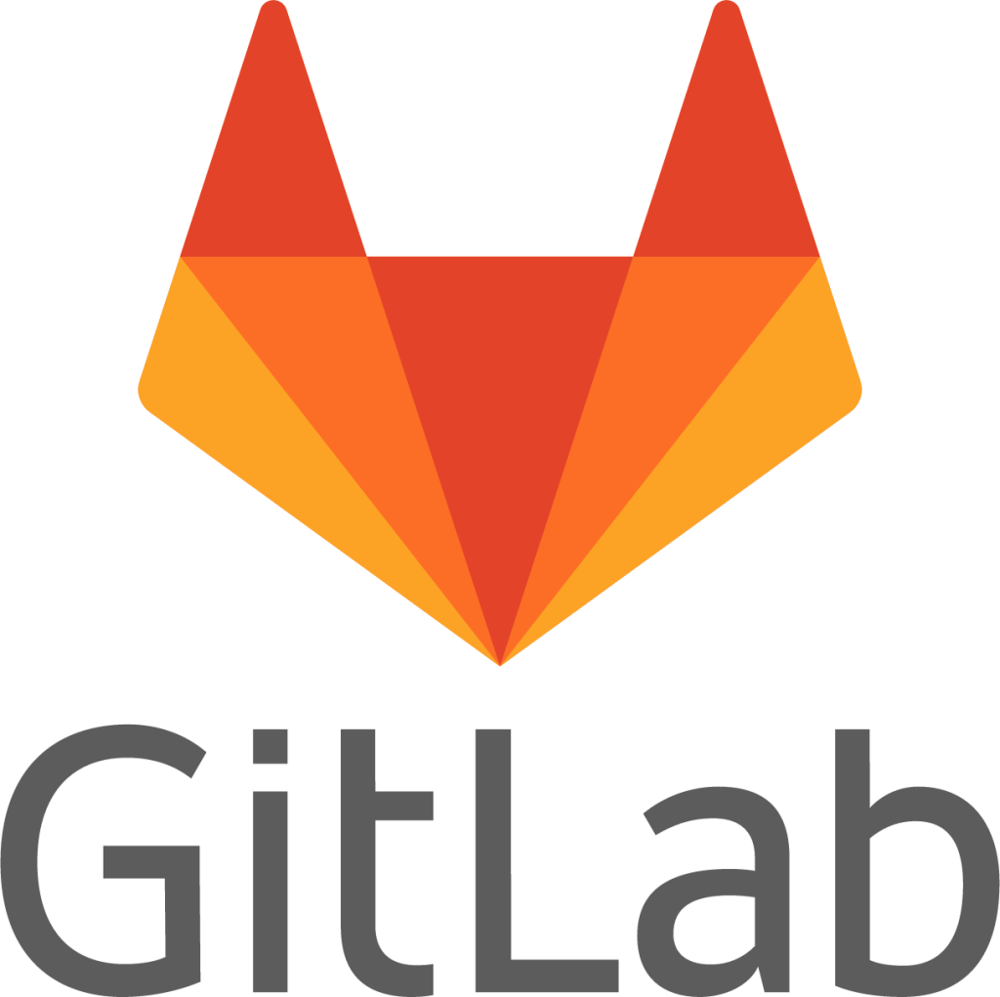
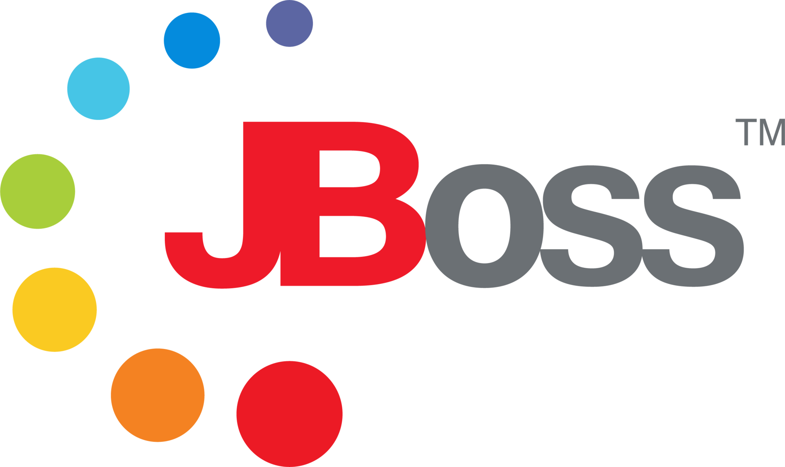
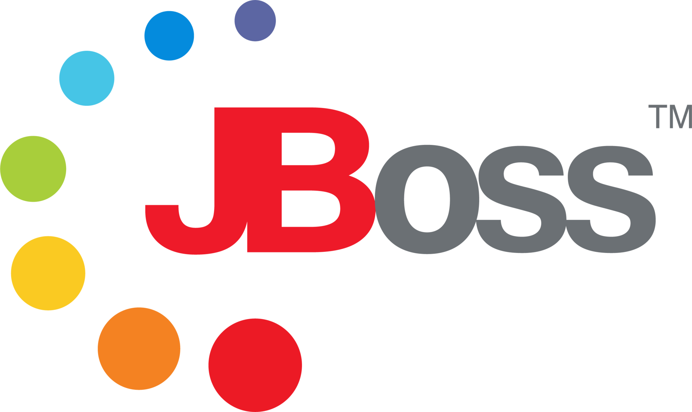

Summary
- Seasoned Java Backend Developer with nearly 5 years of experience at Tata Consultancy Services (TCS) in the BFSI domain, leading backend initiatives for a major US bank.
- Currently working at Clover Infotech Private Limited as a Technical Lead for the client AU Small Finance Bank.
- Demonstrated expertise in building and enhancing enterprise-grade applications using Java, Spring Boot, RESTful and SOAP services, Spring Batch, and Hibernate.
- Proven ability to contribute across multiple application teams in parallel, delivering scalable and reliable solutions.
- Skilled in leading teams and driving end-to-end project delivery in high-velocity Agile environments.
Education
Secondary School Certificate (Year : 2013-2014)
Board: Maharashtra State Board of Secondary & Higher Secondary Education, Pune
Higher Secondary Certificate (Year : 2015-2016)
Board: Maharashtra State Board of Secondary & Higher Secondary Education, Pune
Bachelor Of Computer Science (Year : 2016-2019)
Board: University Of Mumbai
Experience
-

26 August, 2019 - 10 June, 2024
Tata Consultancy Services Limited (TCS)
Designation : Systems Engineer
Role : TCS FS Core Banking Product Implementations
-

14 January, 2025 - Present
Clover Infotech Private Limited
Designation : Senior Software Engineer
Projects
Tata Consultancy Services Limited (08/2019-06/2024)
Client : Zions Bancorporation
TCS BaNCS SOAP/REST APIs(Team Member)
Responsibilities : Involved in sprint planning, Assigning tasks, training/grooming freshers.
- Created and deployed 40+ REST APIs and 20+ Spring Boot APIs to integrate TCS BaNCS Core Banking System (CBS) with client-facing applications, adhering to normal and IFX messaging standards, significantly improving real-time data exchange and operational efficiency.
- Designed and implemented SOAP web services using internal automation tools; tested services with SoapUI and documented them using OpenAPI Specifications (Swagger).
- Deployed and tested web services on JBoss and Tomcat application servers, ensuring high availability and optimal performance across environments.
- Followed CI/CD best practices to automate the build, testing, and deployment processes, improving delivery speed and reducing integration issues.
- Acted as a mentor by training newly onboarded developers, enhancing team productivity and enabling them to handle independent development tasks.
- Resolved critical production issues swiftly, minimizing downtime and protecting the client from potential revenue loss.
Technology Stack- Core Java, JAVA8, Exception Handling, REST APIs, JSON, XML, SOAP, Spring Boot, JAXRS, JBoss-EAP 7.3
TCS BaNCS Service Integrator(SPOC)
Responsibilities : Leading the team, Involved in sprint planning, Assigning tasks, training/grooming freshers, Providing guidance.
- Configured and implemented TCS Service Integrator application independently for multiple clients, tailoring setups based on unique business requirements and compliance needs.
- Engineered business logic to process and validate bulk input files (XLS, CSV, TXT), tracking the processing status of individual records for audit and reporting purposes.
- Designed and developed an end-to-end IBM MQ-based interface enabling asynchronous message communication between third-party systems and internal applications, improving integration reliability and data exchange speed.
- Followed CI/CD principles to develop and deploy robust web applications, ensuring rapid delivery and high-quality code in line with DevOps standards.
Technology Stack- Core Java, IBM-MQ, Spring, Spring Batch, XML, Oracle 19c, GIT, TortoiseGit
TCS BaNCS Individual Reporting System[BIRS](Team Member)
- Developed a report generation module using Spring Batch and Hibernate, exporting data in text format based on complex conditional logic from both relational databases and structured input files.
- Conducted in-depth research and optimization on Oracle databases, crafting efficient SQL and HQL queries to reduce data retrieval time and improve overall application performance.
- Collaborated with Quality Assurance (QA) teams to identify potential defects early in the development lifecycle, ensuring high product quality and timely releases.
- Followed CI/CD best practices for continuous development, testing, and deployment, enabling faster delivery cycles and fewer integration issues.
- Conducted research on Oracle database to optimize data fetching time through effective SQL and HQL queries development.
Technology Stack- Core Java, Java8, Struts, Spring Batch, Hibernate, Javascript, Oracle 19c, XML, HTML, CSS, Jenkins, JBoss EAP-7.3, GIT, TortoiseGit.
Clover Infotech Private Limited (01/2025-Present)
Client : AU Small Finance Bank
AU Small Finance Bank (Technical Lead)
Responsibilities :
- Leading the team of 4 team members. Involved in assigning tasks as well as tracking progress and manage timelines.
- Ensuring code quality through code reviews and helping team members grow technically and professionally.
- Developed new REST APIs using Spring Boot to extend backend functionality, adhering to best practices in API design, security, and error handling. Consuming REST APIs created by the API team.
- Designed and implemented frontend UI components using HTML, CSS, and JavaScript within the Oracle Web Content Management system.
- Integrated REST APIs with frontend using AJAX calls to enable dynamic data retrieval and seamless user experience.
- Automated database-related tasks to reduce manual work to improve productivity in the system. .
Technology Stack- Core Java, Java8, Exception Handling, REST APIs, JSON, SOAP, Spring Boot, Weblogic, Git, GitLab, HTML, CSS, Javascript, JWT, Jira, SHA-256 Cryptographic Algorithm
Technical Interview Panel
Clients : HDFC express, ICICI Lombard, AU Small Finance Bank, BAGIC
- Participated as a member of the technical interview panel for Java developer roles.
- Conducted 100+ technical interviews over 2-3 months and evaluated candidates technical proficiency in Java, Spring Boot, Hibernate, REST APIs, Database and design patterns.
- Assessed candidates understanding of object-oriented programming (OOP), multithreading, exception handling, and data structures & algorithms.
- Provided objective feedback and contributed to hiring decisions in collaboration with HR and team leads.
Personal Projects
★ Weather App
Overview : Developed WeatherApp to check weather conditions, temperature, humidity, wind speed, and other relevant weather data for any specified location.
Technology Stack : Core Java, Java8, REST API, Spring Boot (Thymeleaf), HTML, CSS, JavaScript, OpenWeather API.
★ Portfolio
Overview : A responsive and user-friendly personal portfolio website designed to highlight my experience in IT industry as Java Backend Developer. The site features my professional carrer's project as well as personal project with my industry experience. Tried to create interactive portfolio using HTML, CSS and Javascript..
Technology Stack : HTML, CSS, JavaScript.
★ User Registraction Module
Overview : This application is a secure User Registration and Login Module built using Spring Boot. It provides REST APIs for user management, implements Spring Security with JWT based authentication, and includes email verification using Java Mail Sender. The frontend is developed using Thymeleaf, HTML, and CSS, java-script rendered via Spring Boot MVC
Technology Stack : Core Java, Java8, REST API, Spring Boot (Thymeleaf), HTML, CSS, JavaScript, MySQL, Spring Security, JWT Token.
Technical Skills


 


 
